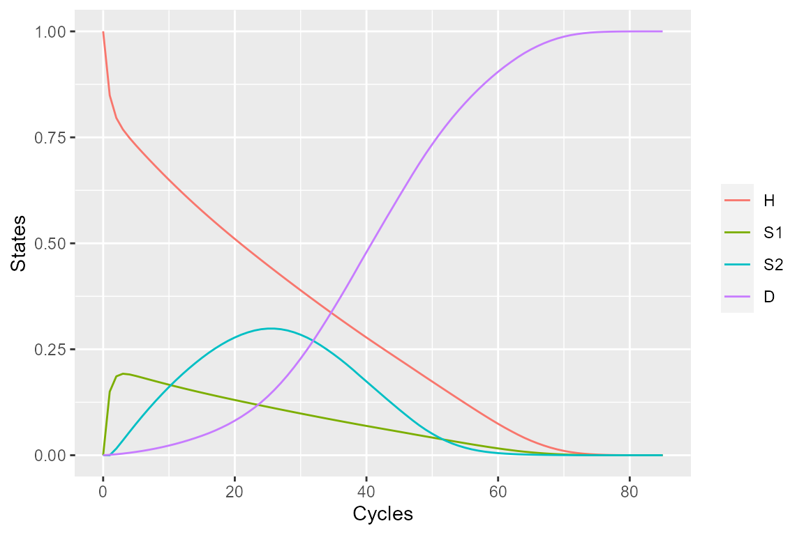
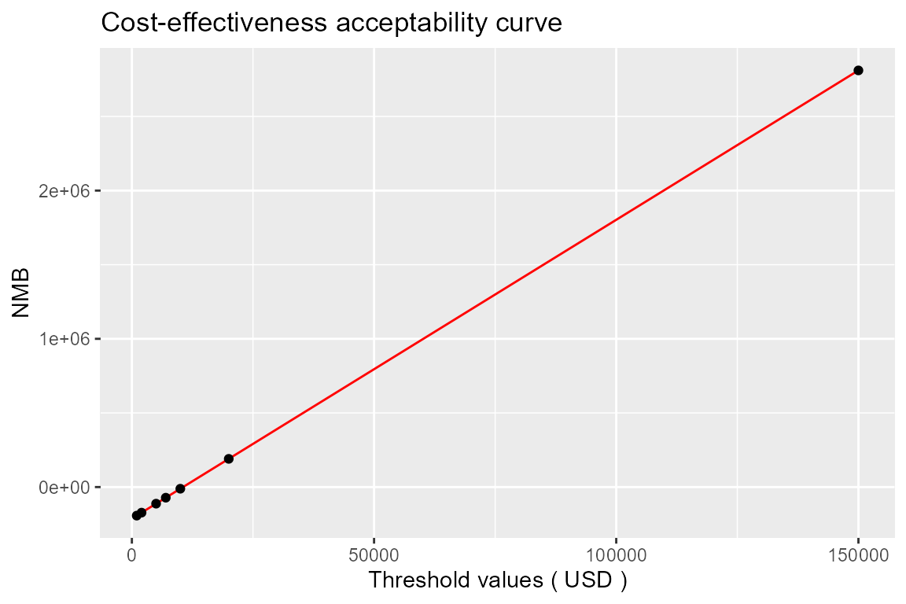

vignettes/Sick_sicker_age_dependent.Rmd
Sick_sicker_age_dependent.RmdThis document demonstrates development of a Markov model explained in reference using this package “packDAMipd”. This model is explained in STM_02.R file in Cohort-modeling-tutorial provided in DARTH-git github page.
Here we look at how the model is defined when the transition probabilities (or parameters) are dependent on the model cycle or time. (Another example for considering the time dependency is explained in vignettes/cycle_dependent.html)
library(packDAMipd)
> Registered S3 method overwritten by 'SurvRegCensCov':
> method from
> print.src dplyr
> Registered S3 methods overwritten by 'car':
> method from
> influence.merMod lme4
> cooks.distance.influence.merMod lme4
> dfbeta.influence.merMod lme4
> dfbetas.influence.merMod lme4Define health states. Each health state must have a name, cost, and utility. The cost and utility are the state values. That means the individuals having the state membership will occur the particular cost and utility. If any cost/utility due to transitions occur, they need to specify similar to defining the transition probabilities.
H <- health_state("H", cost = "c_H ", utility = "u_H") S1 <- health_state("S1", cost = "c_S1",utility = "u_S1") S2 <- health_state("S2", cost = "c_S2",utility = "u_S2") D <- health_state("D", cost = "c_D ",utility = "u_D")
Define allowed transition probabilities and number them. The below matrix is numbered so that the maximum entry in the matrix gives the total number of allowed transitions. Column names and row names are just the names of the health states.“NA” indicates a non allowed transition.
tmat <- rbind(c(1, 2, NA, 3), c(4, 5, 6, 7),c(NA, NA, 8, 9), c(NA, NA, NA, 10)) colnames(tmat) <- rownames(tmat) <- c("H","S1" ,"S2","D")
As there is cost and utility during some transitions, we define tmat_cost and tmat_utility similar to defining transition probability. Again only non zero transition cost and transition utility are non NA.
tmat_cost <- rbind(c(NA, 1, NA, 2), c(NA, NA, NA, 3),c(NA, NA, NA, 4), c(NA, NA, NA, NA)) colnames(tmat_cost) <- rownames(tmat_cost) <- c("H", "S1", "S2", "D") tmat_util <- rbind(c(NA, 1, NA, NA), c(NA, NA, NA, NA),c(NA, NA, NA, NA), c(NA, NA, NA, NA)) colnames(tmat_util) <- rownames(tmat_util) <- c("H", "S1", "S2", "D")
Now we define the transition matrix , transition cost matrix and transition utility matrix (the latter two are optional,we use only if there are cost/utility during transitions) using the tmat defined earlier, and number of health states. Note that the probabilities are age dependent (when compared to simple sick sicker model and are named differently to indicate the age dependency)
tm <- populate_transition_matrix(4, tmat, c("p_HH","p_HS1","p_HDage","p_S1H",
"p_S1S1", "p_S1S2", "p_S1Dage",
"p_S2S2","p_S2Dage","p_DD" ),
colnames(tmat))
> [1] "The transition matrix as explained"
> transition number probabiliy name from from state to to state
> 1: 1 prob_H_to_H 1 H 1 H
> 2: 2 prob_H_to_S1 1 H 2 S1
> 3: 3 prob_H_to_D 1 H 4 D
> 4: 4 prob_S1_to_H 2 S1 1 H
> 5: 5 prob_S1_to_S1 2 S1 2 S1
> 6: 6 prob_S1_to_S2 2 S1 3 S2
> 7: 7 prob_S1_to_D 2 S1 4 D
> 8: 8 prob_S2_to_S2 3 S2 3 S2
> 9: 9 prob_S2_to_D 3 S2 4 D
> 10: 10 prob_D_to_D 4 D 4 D
tm_cost <- transition_cost_util(4, tmat_cost, c("ic_HS1","ic_D","ic_D","ic_D"), colnames(tmat_cost))
tm_util <- transition_cost_util(4, tmat_util, c("du_HS1" ), colnames(tmat_util))Now define the parameter list using define_parameters(). If there is any formula or expression to be evaluated during the cycle, it has be given as a string (see below). For example. p_S1D is calculated using a formula with parameters p_HD and hr_S1 and is thus given as a string expression. Here the mortality rates are age dependent, thus each cycle, the age of the cohort is to be calculated to determine the mortality. We read the mortality data from the provided data file as shown below. The dependency is thus defined by using the keyword “Markov_cycle” for the current cycle.
mortality_file = system.file("extdata", "LifeTable_USA_Mx_2015.csv", package = "packDAMipd") param_list <- define_parameters(age_init = 25, mortality_age = "get_mortality_from_file(mortality_file, age_init - 1 + markov_cycle, \"total\")", p_HDage = "1-exp(-mortality_age)", p_HS1 = 0.15, p_S1H = 0.5, p_S1S2 = 0.105, hr_S1 = 3,hr_S2 = 10, p_S1Dage = "1-exp(-mortality_age *hr_S1)", p_S2Dage = "1-exp(-mortality_age *hr_S2)", p_HH = "1 - (p_HS1 + p_HDage)", p_S1S1 = "1 - (p_S1H + p_S1S2+ p_S1Dage)", p_S2S2 = "1 - ( p_S2Dage)", p_DD = 1, c_H = 2000,c_S1 = 4000,c_S2 = 15000, c_D = 0, c_Trt = 12000,u_H = 1, u_S1 = 0.75, u_S2 = 0.5,u_D = 0, u_Trt = 0.95, du_HS1 = -0.01, ic_HS1 = 1000, ic_D = 2000)
We define the strategy “Usual care” by using the function ‘strategy’ with the health states combined (using combine_state()), the transition matrix (tm), transition cost and utility matrices. Using the defined strategy ‘uc_strategy’, we run the Markov model using Markov_model() with cycles, initial states, initial cost, initial utility values, discount rates and parameter list. The results of the Markov model (trace matrix) can be plotted using plot_model() function.
health_states <- combine_state(H,S1,S2,D) uc_strategy <- strategy(tm, health_states, "Usual care",tm_cost,tm_util) uc_markov <- markov_model(current_strategy = uc_strategy, cycles = 85, initial_state = c(1, 0,0,0), discount = c(0.03,0.03), parameter_values = param_list, TRUE, method = "half cycle correction") plot_model(uc_markov)

Similarly, we define the health states, strategy, and Markov model for the “New treatment”. Parameter list is the same as that defined for the usual care. Costs for the health states in the new treatment strategy differs, thus we need to redefine the health states.
H <- health_state("H", cost = "c_H ", utility = "u_H") S1 <- health_state("S1", cost = "c_S1 + c_Trt ",utility = "u_Trt") S2 <- health_state("S2", cost = "c_S2 + c_Trt",utility = "u_S2") D <- health_state("D", cost = "c_D ",utility = "u_D") health_states <- combine_state(H,S1,S2,D) trt_strategy <- strategy(tm, health_states, "New treatment",tm_cost,tm_util) trt_markov <- markov_model(current_strategy = trt_strategy, cycles = 85, initial_state = c(1, 0,0,0), discount = c(0.03,0.03),parameter_values = param_list,TRUE, method = "half cycle correction")
Once we have the results form the Markov models for both the strategies, we combine these two to define list_Markov. Finally we obtain incremental cost effectiveness ratio (ICER) and net monetary benefit (NMB) for the cost effectiveness analysis using the function calculate_icer_nmb(). The results of the cost effectiveness acceptability curve(CEAC) can be plotted using plot_nmb_lambda function as shown below. For calculating NMB, threshold value and the name of the comparator should be provided, while for plotting CEAC, range of values of thresholds should be provided along with the name of the comparator.
The reports the results as follows which is the same as obtained using packDAMipd.
The cost of usual care obtained from STM_02.R of Cohort-modeling-tutorial in DARTH-git package is 115,415 USD while that of the new treatment is 212,867 USD. The QALYs for the usual care and the new treatment are 19.460 and 20.157 respectively. The ICER obtained is 139,794
list_markov <- combine_markov(uc_markov, trt_markov)
cal <- calculate_icer_nmb(list_markov, threshold = 20000,
comparator = "Usual care" )
cal
> Strategy Cost Effect NMB
> 1: Usual care 115414.831188968 19.4595827471125 273776.823753282
> 2: New treatment 212866.531304463 20.1566917302682 190267.303300902
> Inc_Cost Inc_Effect ICER
> 1: <NA> <NA> <NA>
> 2: 97451.7001154942 0.697108983155694 139794.067312613plot_nmb_lambda(list_markov,threshold_values = c(1000, 2000, 5000, 7000, 10000, 150000, 20000), comparator = "Usual care" , currency = "USD")
